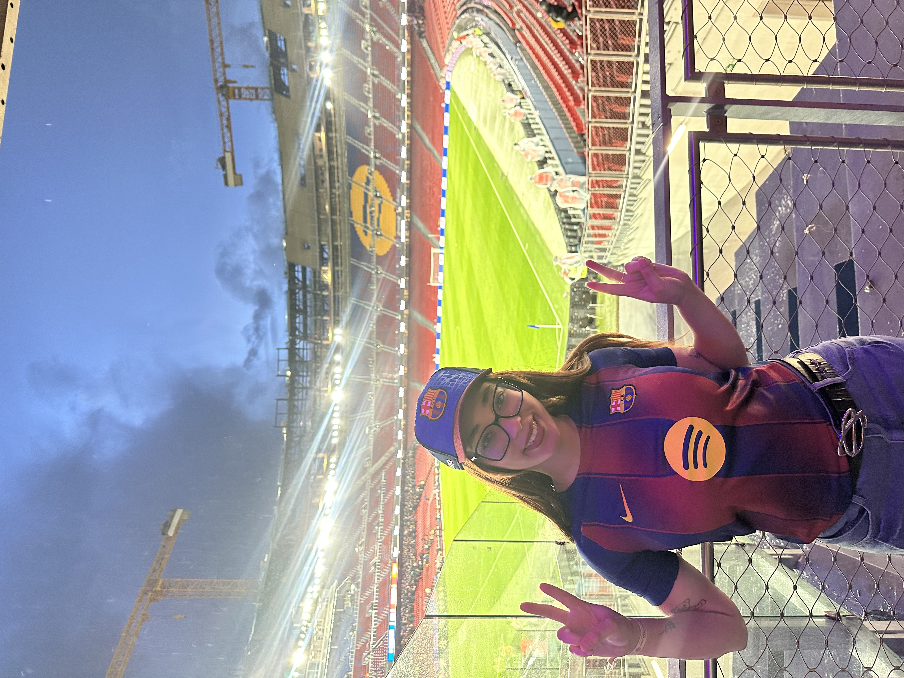
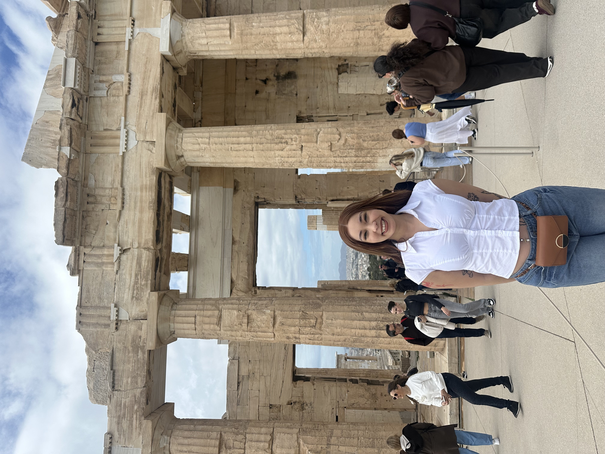
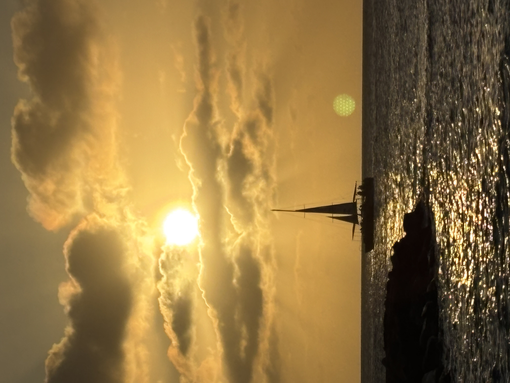

My 2026 Travel Collection
This is my 2026 Travel Collection. This collection showcases just a few of the places I've been able to tarvel to so far in 2026. I've been able to travel to some amazing places and I am excited to share my experiences with you. I hope you enjoy looking through my collection and seeing the different places I've been able to visit. I am looking forward to adding more items to my collection as I continue to travel throughout the year.

Barcelona, Spain
2026 | Europe
Barcelona was the city where I saw my first football match! I went in January for the weekend and got to have an amazing time. A lot of partying took place and I got to meet a lot of really cool people that helped make the experience that much better. I did get to see a lot of great sights but I was definitley out at the bars more than anything.

Athens, Greece
2026 | Europe
Greece was a trip that I took at the end of March/beginning of April. I went out there for a few days to celebrate my birthday. I got to see some amazing sights here as well while also being able to go out and party! I made some new friends along the way and we walked around for hours exploring the city.

Seoul, South Korea
2026 | Asia
At the end of April I was able to visit Seoul! I had the pleasure of staying in this beautiful city for about a week. I went around during the weekdays to explore and went out on the weekend. I was able to meet some cool people while there and create unforgetable memories. In the photo above I went to visit Lotte World Tower, which is South Koreas largest building (123 stories)!

Aruba
2026 | Caribbean
I had the pleasure of taking my mommy on vacation! In May, I was able to take her to Aruba for a quick weekend getaway. We enjoyed our time out there and really got to decompress. The views were beautiful and the vibes were amazing. I loved it, she loved it, it was a great trip!

Huacachine, Peru
2026 | South America
In June, just a few days ago, I was able to take an amazing trip to Peru for about a week! I was able to visit many places in this country and the photo above is stop 2! I landed in Lima and stayed for a few days before taking the 4.5hr bus ride to this beautiful oasis! Along the way there was also a beautiful boat tour to some islands. It's south of Lima and was one of my best experiences. During my time here I got to ride in sand buggies and board down a massive dune, it was amazing! The experience was unlike anything else and there were many stops to go!

Machu Picchu City
2026 | South America
My second to last stop in Peru was seeing Machu Picchu! I acomplished so much just on this one trip so more slides are to come! Leading up to this photo I had just hiked around to see all of the sacred Valleys before taking a train to the city where I would pick up my tickets to see one of the 7 wonders the next day! The city at the base of the mountain was very beautiful and there was a lot to see. I was able to find a very pretty ponchu that I would use to take all of my pictures that day! The hike up the mountain wasn't bad and the views spectacular! The preperation I needed to hike Rainbow Mountain the next day before flying nack home!